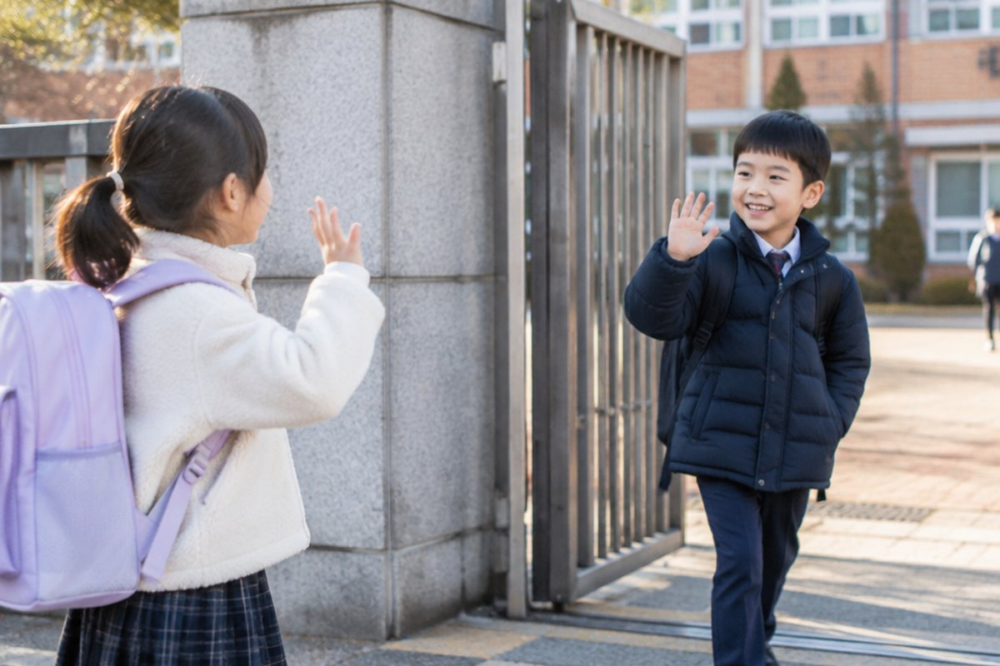

전체 단원 › 3학년 1학기 › 영어 › 인사하기
처음 만난 친구에게 영어로 인사해 볼까?

새 학기에 처음 만난 친구에게 "안녕, 내 이름은 ○○야!"라고 말하죠? 영어로도 인사하고 이름을 소개해 봐요.
만날 때와 헤어질 때 인사
만나면 "Hello!"나 "Hi!"라고 인사해요. 둘 다 '안녕!'이라는 뜻이에요.
헤어질 때는 "Goodbye!"나 "Bye!" 또는 "See you later.(나중에 봐.)"라고 해요. 아침에는 "Good morning."이라고 인사할 수도 있어요.
Hi, Mina! - Hello, Tom! / Goodbye! - See you!
이름 묻고 소개하기
상대의 이름이 궁금하면 "What's your name?(네 이름이 뭐야?)"이라고 물어요.
대답은 "I'm Mina." 또는 "My name is Mina."라고 해요. 둘 다 '나는 미나야'라는 뜻이에요.
What's your name? - My name is Jiho.
반갑다고 말하기, 안부 묻기
처음 만났을 때는 "Nice to meet you.(만나서 반가워.)"라고 하고, 상대는 "Nice to meet you, too.(나도 만나서 반가워.)"라고 대답해요.
아는 친구에게는 "How are you?(어떻게 지내?)"라고 안부를 물어요. "I'm fine, thank you.(잘 지내, 고마워.)"라고 대답해요.
How are you? - I'm good, thanks.
핵심 낱말
- Hello / Hi
- 만났을 때 하는 인사 '안녕'
- Goodbye / Bye
- 헤어질 때 하는 인사 '잘 가'
- name
- 이름
- Nice to meet you.
- 처음 만나서 반갑다는 말
꼭 알아야 할 표현
| Hello! / Hi! | 안녕! | 만났을 때 |
| Good morning. | 좋은 아침이야. | 아침 인사 |
| What's your name? | 네 이름이 뭐야? | |
| I'm Mina. | 나는 미나야. | |
| Nice to meet you. | 만나서 반가워. | 처음 만났을 때 |
| Nice to meet you, too. | 나도 만나서 반가워. | |
| How are you? | 어떻게 지내? | |
| Goodbye. See you later. | 잘 가. 나중에 봐. | 헤어질 때 |
한 줄 정리
- 만날 때는 Hello/Hi, 헤어질 때는 Goodbye/Bye라고 해요.
- 이름은 What's your name?으로 묻고 I'm ~./My name is ~.로 대답해요.
- 처음 만나면 Nice to meet you., 안부는 How are you?로 물어요.
학교 교육과정 연결
- [4영02-05] 자신, 주변 사람이나 사물의 소개나 묘사를 쉽고 간단한 문장으로 말하거나 보고 쓴다.
- [4영02-10] 의사소통 활동에 흥미와 자신감을 가지고 대화 예절을 지키며 참여한다.